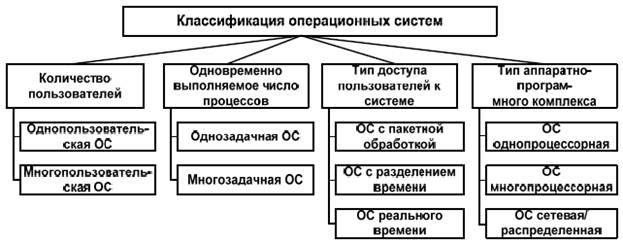

Операционная система составляет основу программного обеспечения ПК. Операционная система представляет комплекс системных и служебных программных средств, который обеспечивает взаимодействие пользователя с компьютером и выполнение всех других программ.
С одной стороны, она опирается на базовое программное обеспечение ПК, входящее в его систему BIOS, с другой стороны, она сама является опорой для программного обеспечения более высоких уровней – прикладных и большинства служебных приложений.
Для того чтобы компьютер мог работать, на его жестком диске должна быть установлена (записана) операционная система. При включении компьютера она считывается с дисковой памяти и размещается в ОЗУ. Этот процесс называется загрузкой операционной системы.

По числу одновременно работающих пользователей на ЭВМ ОС разделяются на однопользовательские (MS DOS) и многопользовательские (Unix, Linux, Windows 95 - XP)
В многопользовательских ОС каждый пользователь настраивает для себя интерфейс пользователя, т.е. может создать собственные наборы ярлыков, группы программ, задать индивидуальную цветовую схему, переместить в удобное место панель задач и добавить в меню Пуск новые пункты. В многопользовательских ОС существуют средства защиты информации каждого пользователя от несанкционированного доступа других пользователей.
По числу одновременно выполняемых задач операционные системы делятся на два класса:
1. Однозадачные (MS DOS).
2. Многозадачные (OS/2, Unix, Windows).
В зависимости от областей использования:
1. Системы пакетной обработки (ОС ЕС).
2. Системы с разделением времени (Unix, Linux, Windows).
3. Системы реального времени (RT11).
Системы пакетной обработки предназначены для решения задач, которые не требуют быстрого получения результатов. Главной целью ОС пакетной обработки является максимальная пропускная способность или решение максимального числа задач в единицу времени.
В системах с разделением времени для выполнения каждой задачи выделяется небольшой промежуток времени, и ни одна задача не занимает процессор надолго. Если этот промежуток времени выбран минимальным, то создается видимость одновременного выполнения нескольких задач. Эти системы обладают меньшей пропускной способностью, но обеспечивают высокую эффективность работы пользователя в интерактивном режиме.
Системы реального времени применяются для управления технологическим процессом или техническим объектом, например, летательным объектом, станком и т.д.
По типу аппаратного комплекса:
Многопроцессорные и однопроцессорные операционные системы. Одним из важных свойств ОС является наличие в ней средств поддержки многопроцессорной обработки данных. Такие средства существуют в OS/2, Net Ware, Widows NT.По способу организации вычислительного процесса эти ОС могут быть разделены на асимметричные и симметричные.
Одним из важнейших признаков классификации ЭВМ является разделение их на локальные и сетевые. Локальные ОС применяются на автономных ПК или ПК, которые используются в компьютерных сетях в качестве клиента.
В состав локальных ОС входит клиентская часть ПО для доступа к удаленным ресурсам и услугам. Сетевые ОС предназначены для управления ресурсами ПК включенных в сеть с целью совместного использования ресурсов. Они представляют мощные средства разграничения доступа к информации, ее целостности и другие возможности использования сетевых ресурсов.